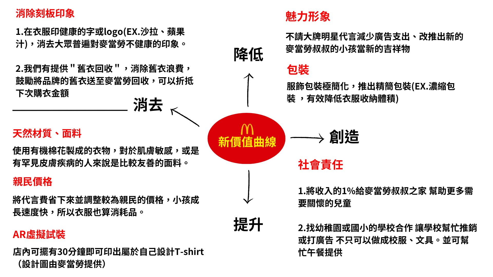
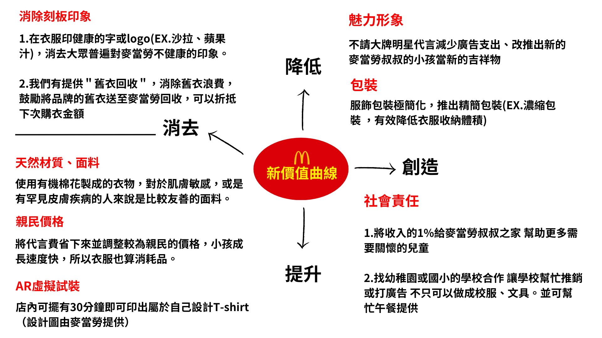

吳亭儀
台灣，桃園
tingyiw1127@gmail.com
0903571127
專業技能
電商營運策略
90%
數據分析
88%
行銷文案撰寫
85%
Facebook.Instergram.Line.Google廣告操作投放
75%
平面設計與影片剪輯
70%
社群經營管理
90%
Languages
中文
英文
相關證照
Google Analytics 4
獲獎紀錄
工作經驗
會計人員 /衍展企業有限公司
2022.6 - 2022.12
工作內容
- 審查公司財務收支文件及憑證
- 編制公司帳務報表、財務分析資料
- 協助業務處理銷售業務相關作業
銷售人員 / 福城有限公司nike kids
2020.4 - 2022.6
工作內容
- 門市銷售
- 顧客關係管理
- 指導管理工讀生與分店新進人員
- 進貨與轉調轉貨處理
- EC網路商品出貨
- 經營 FB / IG 粉絲專頁-福城台茂Nike Kids兒童專賣店
每月業績達標率82%、年業績達標100%
獲得台茂2020年週年慶業績達標獎、2021年跨年慶業績優良獎、2022年週年慶業績優良獎
了解電商運作模式、同時接觸實體與線上的客戶
銷售人員 / 麗嬰房股份有限公司
Jun 2010 - Mar 2012
工作內容
- 門市銷售
- 顧客關係管理
- 進出貨與轉調處理
- Line@粉專經營
教育程度
萬能科技大學
2018 - 2022
觀光休閒事業管理學系
- 觀光事業管理
- 觀光產業多媒體設計
- 品牌管理學
- 行銷學
- 社交媒體營運
桃園高中
2015 - 2017
普通科
中文自傳
人資主管 您好
我是吳亭儀，大學就讀觀光事業管理系，深刻瞭解了觀光產業的營運和行銷策略。我不僅學習了觀光產業的管理和執行技巧，還習得了多媒體設計、影片剪輯和修圖等實用技能。此外，我選擇加修品牌管理、行銷學和社交媒體營運等課程，為日後的電商行銷打下了基礎。
在運動品牌公司的多年工作經驗，讓我擁有廣泛的市場行銷和品牌管理知識。除了每月業績達標率82%、更在整個年度實現了100%的業績目標，成為同業業績第一名，獲得週年慶和跨年慶業績表現卓越的殊榮。我也積極參與公司的電商和粉絲團經營，擴大了品牌的線上影響力。同時，我負責指導管理工讀生和分店新進人員，並有效處理客訴，確保客戶得到優質的服務體驗。我在會計領域擁有經驗，此工作培養了我在數據分析和預算管理相關的能力，使我能夠更好地掌握財務情況，做出明智的決策。然而，我逐漸發現這個領域無法完全滿足我對行銷策略和自主性的渴望，因此，我決定重新投入行銷領域的行列，並開始進一步培養這方面的能力。
在這兩個半月的清大MarTech培訓課程中，我運用SWOT、STP和藍海策略來製訂我的行銷策略，和小組討論時，我不但能快速有效率地提供想法、整理重點，並且引領組員，在報告時也獲得老師和同學的讚賞。初期學習了Google、Facebook、Instagram和LINE的廣告操作與投放，並能根據不同的平台和受眾，制定有效的廣告策略。中期學會撰寫html網頁設計、css語法，架設了自己的網頁和購物網，讓我具備能和工程師有效溝通的能力。最後考取了GA4數位行銷證照，對於GA與網站數據分析有深入的理解，並能透過BIG Data分析和AI結合，精準預測消費行為，為企業提供有價值的市場洞察。也了解Power BI，能夠透過資料可視化幫助團隊更好地理解市場趨勢和消費者行為。此外，我也在CIA語言學校深造，進一步提升了英文能力，具備與國際市場接軌的能力。
對於未來期許可學以致用，為公司策畫專案或行銷企劃，優化公司品牌形象，目前也不斷學習相關技能，如AI、PS等技巧。非常感謝您抽空看我的履歷，希望未來有進一步面談的機會。
英文自傳
To whom it may concern,
My name is Kelly Ting-Yi Wu, I graduated from Vanung University, majored in Leisure and Tourism Management. Throughout my academic years, I mainly learned travel industry management and operation, tourism multimedia design ,and economics. The study allowed me to learn the operation of travel industry, and the economic factors of it. I also acquired skills in multimedia design in the tourism sector. In addition to my major, I have also taken numerous marketing-related courses to enhance my knowledge in the field. I have learned proposal writing, marketing management and social media marketing.
Top sales was given to me while I was working at Nike Young Athletes of a department store. With my interpersonal skills, I reached 82% of the monthly quota and 100% of annual quota, which was seldom for a junior sales to achieve. Thus, I had been awarded with Anniversary Achievement Award in both 2020 and 2022.
Furthermore, I have gained valuable experience in accounting, after working in the field for a year. I commence to be responsible for checking balance sheet and revise lifted figures. This job has developed my skills related to analyzing data and budget management.
My skills include being a results-driven marketing professional with expertise in SEO management, and data-driven strategies. I am certified in GA4 Digital Marketing and possess website data analysis, BIG Data, and AI integration for precise consumer behavior prediction. I am skilled in managing advertising campaigns across various platforms such as Google, Facebook, Instagram, and LINE. Additionally, I can do graphic design using Photoshop , as well as video editing. I also have experience with Power BI and setting up e-commerce platforms.
Look forward to having an opportunity for an interview to discuss the details of my CV.
作品集


/1.jpg)
/4.jpg)
/5.jpg)
/1.jpg)
/2.jpg)
/3.jpg)
/1.jpg)
/2.jpg) 


/1.jpg)
/2.jpg)
/3.jpg)
/1.jpg)
/2.jpg)
/3.jpg)
/4.jpg)
/5.jpg)
/1.jpg)
/2.jpg)
/3.jpg)
/4.jpg)
/5.jpg)
/6.jpg)